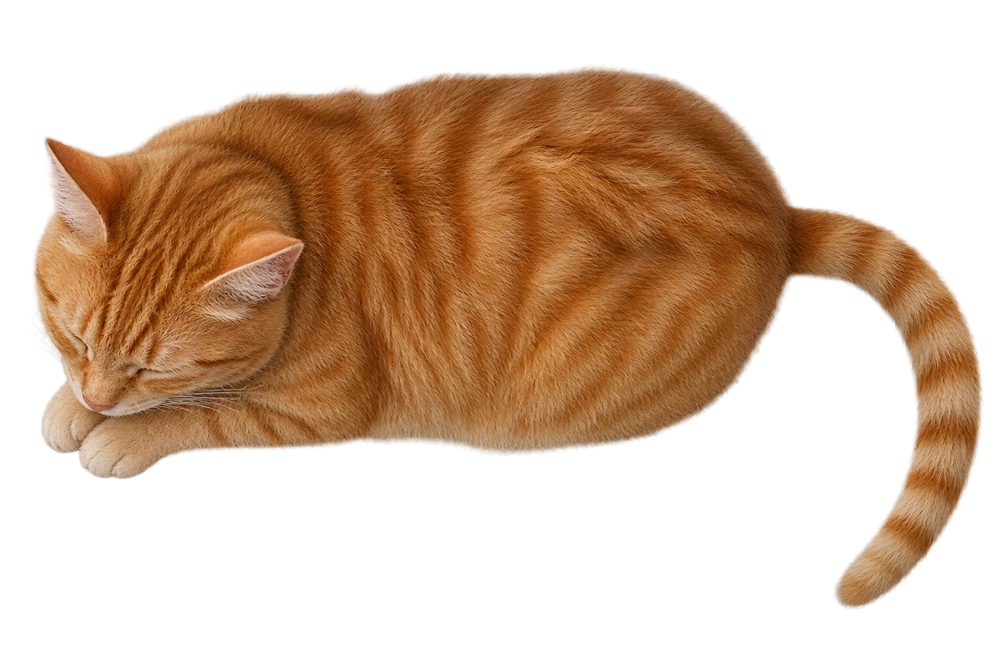

A little cat time.
Stroke a sleepy cat and listen for a purr.

Stroke the fur or sweep outward along the tail. Space pet T tail
Stroke a sleepy cat and listen for a purr.

Stroke the fur or sweep outward along the tail. Space pet T tail